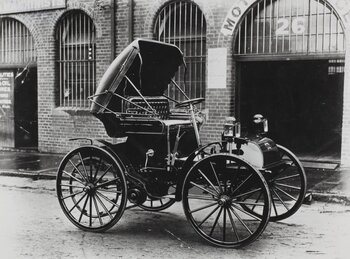

Historical
The historical genre is often confused with historical fiction. However, there is a difference. Historical fiction is a book that is written about historic events a great deal of time after that event. The historical genre is books that are written about historical events, but are written and published at the time surrounding that event. For example, the well-known classic, Little Women by Louisa May Alcott, would be historical, but not historical fiction because it was written and published around the time it is set in. Historical books are intriguing because, not only do they talk about historical incidents, but they talk about them from a first-hand perspective. These can be very informative. Check out the following summaries for a brush-up on your history.
